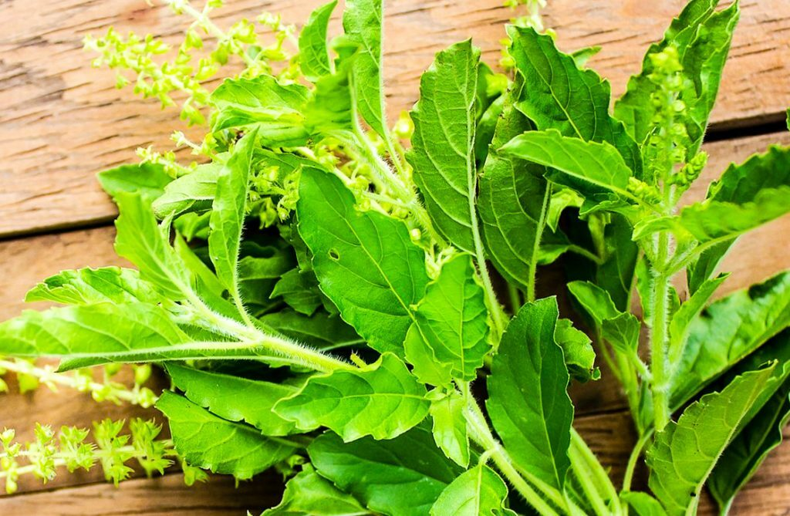

กะเพรา
ไม้พุ่ม ขนาดเล็ก สูงประมาณ 0.3 - 1.0 เมตร ลำต้นตั้งตรง ลักษณะเป็นรูปสี่เหลี่ยม โคนต้นแข็ง มีขนคลุมทั่ว แตกกิ่งก้านสาขามาก และกะเพราลูกผสมระหว่างกะเพราแดงและกะเพราขาว มีลักษณะทั่วไปคล้ายโหระพา ต่างกันที่กลิ่นและกิ่งก้านซึ่งมีขนปกคลุมมากกว่า กะเพราขาว มีใบและลำต้นสีเขียว และกะเพราะแดง มีใบและลำต้นสีแดงอมเขียว
ใบ เป็นใบเดี่ยว แตกใบออกตรงข้ามในแต่ละข้อของลำต้นและกิ่ง ลักษณะใบรูปรีหรือรูปไข่ค่อนข้างยาว ปลายใบแหลม โคนใบรูปลิ่มหรือมน ขอบใบจักฟันเลื่อยและเป็นคลื่น แผ่นใบบางสีเขียวหรือสีแดง และมีขนปกคลุมทั้งสองด้าน ก้านใบสีเขียวหรือสีแดงแล้วแต่พันธุ์
ดอก ออกดอกเป็นช่อแบบช่อฉัตร ออกช่อที่ยอดหรือปลายกิ่ง ริ้วประดับรูปไข่หรือรูปหัวใจ ปลายแหลม ขอบมีขน ดอกย่อยแบบสมมาตรด้านข้าง ก้านดอกโค้งยาวมีขน มีกลีบเลี้ยงเชื่อมติดกันเป็นหลอดปลายแยกเป็นปาก กลีบดอกสีขาวอมม่วงหรือสีม่วงเชื่อมติดกันเป็นรูประฆังปลายแยกเป็นปาก ปากบนมีแฉกมนๆ 4 แฉก ปากล่างโค้งลง แบน ขอบเรียบ ดอกกะเพราแดงสีเข้มกว่ากะเพราขาว
ผล เป็นแบบผลเปลือกแห้งเมล็ดเดียว มีขนาดเล็ก ปลายมน เกลี้ยง
นาดเล็ก รูปไข่ สีน้ำตาลมีจุดสีเข้ม หุ้มด้วยกลีบเลี้ยงของเมล็ด
การปลูกกะเพราทำได้ทั้งโดยวิธีเพาะเมล็ด และวิธีชำกิ่ง แต่วิธีเพาะเมล็ดกะเพราจะโตช้ากว่า จึงแนะนำให้ใช้วิธีชำกิ่ง
การเลือกกิ่งพันธุ์ให้เลือกกิ่งกลางแก่กลางอ่อนที่ยังไม่เคยออกดอก ตัดกิ่งยาวประมาณ 4-5 นิ้วมาปักชำในกระถาง โดยปักเอียง 45 องศา รดน้ำให้ชุ่ม ไม่กี่วันกะเพราก็แตกรากแตกใบ ต้นโตเร็วกว่าวิธีเพาะเมล็ดมาก เมื่อกะเพราแตกกิ่งดีแล้วจะปลูกในกระถางต่อไปก็ได้ หรือนำไปปลูกลงดินก็ได้ ข้อแตกต่างคือถ้าย้ายมาปลูกลงดินจะได้กะเพราที่ต้นสูงใหญ่กว่า วิธีปลูกลงดินถ้ามีพื้นที่เหลือพอก็ปลูกหลายต้นได้เลย โดยปลูกให้ต้นห่างกัน 20-30 เซนติเมตร
การให้น้ำ ให้น้ำอย่างเพียงพอและสม่ำเสมอทุกวัน ควรกำจัดวัชพืชทุกครั้งที่มีการให้ปุ๋ย และเมื่อมีวัชพืชรบกวน
ใบหรือทั้งต้น ใช้เป็นยาขับลมแก้ปวดท้อง ท้องเสีย และคลื่นไส้อาเจียน นิยมใช้กะเพราแดงมากกว่ากะเพราขาว
ใบ รสเผ็ดร้อน ต้มเอาน้ำดื่มเป็นยาขับลม แก้ท้องอืด ท้องเฟ้อ แก้ปวดท้อง บำรุงธาตุ แก้จุกเสียด แก้ลมตานซาง แก้คลื่นเหียนอาเจียน น้ำคั้นจากใบใช้เป็นยาขับเสมหะ ขับเหงื่อ ขับน้ำดี ช่วยย่อยไขมัน น้ำคั้นจากใบใช้ทาภายนอกแก้โรคผิวหนัง กลาก เกลื้อน รักษาหูด หยอดหูแก้อาการปวดหู ใบแห้งใช้ชงดื่มกับน้ำแก้ท้องอืด ท้องเฟ้อ และน้ำมันจากใบใช้เป็นยาฆ่ายุงได้ซึ่งมีฤทธิ์ได้นาน 2 ชั่วโมง หรือไล่แมลงวันทอง บดเป็นยานัตถุ์ แก้คัดจมูก ยาชงหรือน้ำต้มใบใช้แก้ตับอักเสบและบำรุงธาตุสำหรับเด็ก
ดอก รสเผ็ดร้อน ผสมกับน้ำผึ้งรับประทานแก้หลอดลมอักเสบ
เมล็ด รสเผ็ดร้อน เป็นยาขับลม แก้ท้องอืดท้องเฟ้อ แก้โรคทางเดินปัสสาวะ และไตอักเสบ, เมื่อนำเมล็ดไปแช่น้ำจะพองตัวเป็นเมือกขาวใช้พอกบริเวณตาเมื่อฝุ่นละอองเข้าตาหรือตามีผง และจะไม่ทำให้ตาช้ำ
ราก รสเผ็ดร้อน ต้มน้ำดื่มเป็นยาขับเหงื่อในคนไข้โรคมาลาเรีย แก้ธาตุพิการ
ทั้งห้า หรือทุกส่วนของต้น เป็นยาเพิ่มน้ำนมในสตรีหลังหลอดบุตร ขับน้ำนม บรรเทาอาการไข้เรื้อรัง
1. ต้มน้ำให้เดือด จากนั้นนำใบกระเพรามาลวกน้ำร้อน ใช้เวลาไม่นาน พอให้ใบกระเพราเปลี่ยนสี ก็ถือว่าใช้ได้
2. ตักขึ้นมาน็อคในน้ำเย็นจัด พักจนใบกระเพราเย็นสนิท
3. นำใส่ในถุงซิปล็อคที่สามารถแช่ช่องแข็งได้ บิดน้ำออกให้หมาดก่อนนำใส่ถุง
4. ก่อนปิดถุง พยายามไล่อากาศออกให้หมด นำไปแช่แข็ง